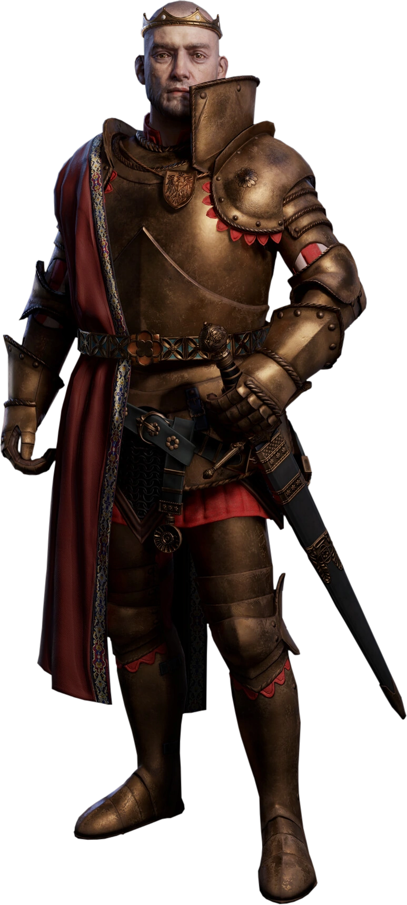
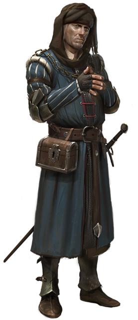
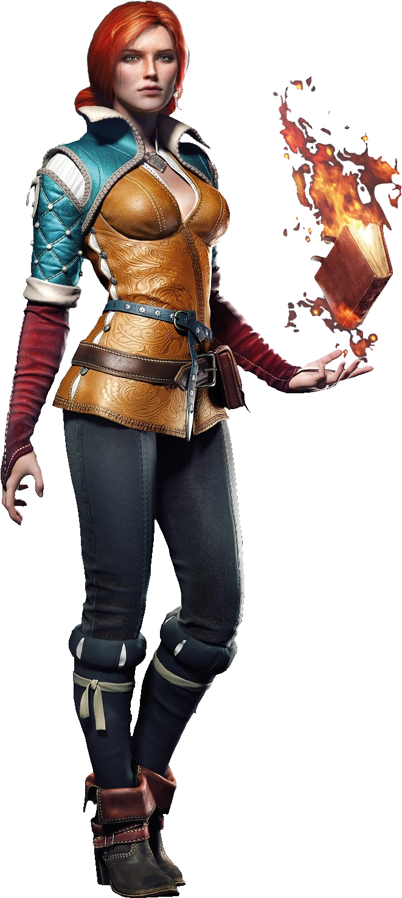
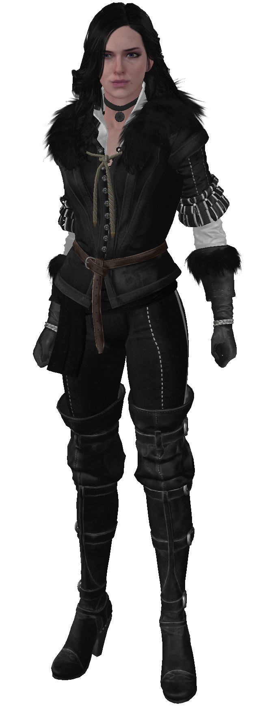
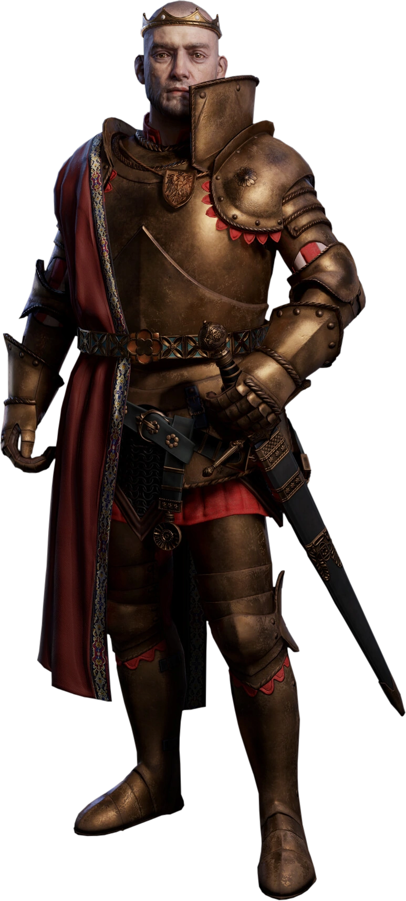
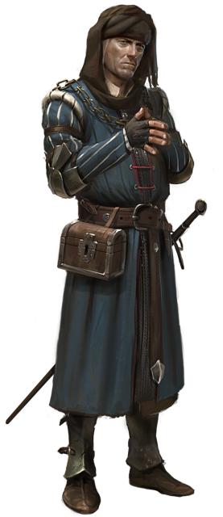
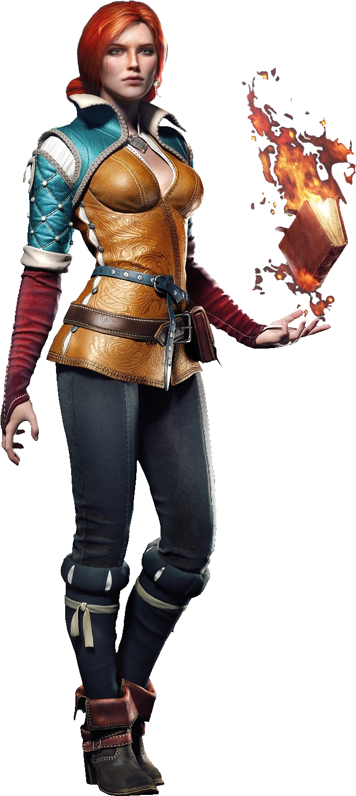
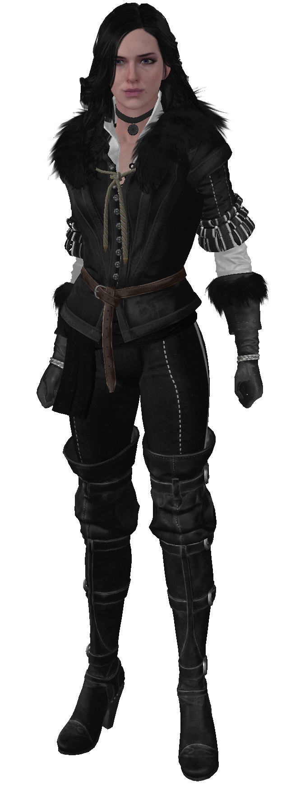

Cesarstwo Nilfgaardu – największy twór państwowy w historii uniwersum Wiedźmina ze stolicą w Nilfgaardzie, leżący na południu Kontynentu, posiadający zarówno rozbudowane zaplecze gospodarcze, jak i bitną, wyszkoloną armię oraz utalentowanych dowódców i polityków. Cesarstwo ma przynajmniej 133 lata w 1268 roku.
Redania (od st. Roethain[1]) – królestwo północy leżące między rzekami Buina i Pontar, jedno z Czterech Królestw. Graniczy z Kovirem, Caingorn, Kaedwen, Aedirn i Temerią. Na terenie Redanii leży Wolne Miasto Novigrad i uniwersytet w Oxenfurcie. Stolicą Redanii jest Tretogor.
Temeria – królestwo północy leżące między rzekami Pontar i Jaruga, jedno z Czterech Królestw. Graniczy z Redanią, Kerack, Kaedwen, Aedirn, Brokilonem i Cidaris. Na terenie Temerii jest sławna szkoła dla czarodziejek na wyspie Thanedd. Stolicą Temerii jest Wyzima.
Niegdyś Radowid I Wielki, król Redanii podarował te kraje swemu znienawidzonemu bratu Trojdenowi i zaleciwszy, by nie pojawiał się on więcej na dworze w Tretogorze, uczynił go hrabią apanażystą , nieponoszącym jednak żadnych ciężarów czy powinności lennych. Stan ten utrzymywał się przez lata, a do Koviru i Poviss ciągnęły zastępy ludzi, czasem wyjętych spod prawa, ale także niedocenianych uczonych, techników, wierzących w możliwość zbudowania wymyślonych przez siebie maszyn, kupców niebojących się ryzyka i geologów oraz górników.
Skellige – państwo leżące na archipelagu wysp o tej samej nazwie na Wielkim Morzu, u wybrzeży Cintry. Wyspy te opływają w legendy, słyną z korsarzy i ich statków. Ludzie, którzy osiedli na wyspach, zamiast walczyć ze Starszymi Rasami, postanowili z nimi koegzystować.